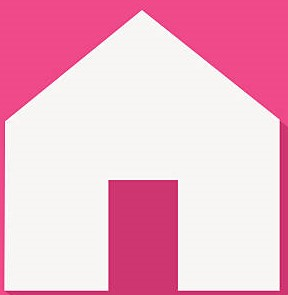

Es reconocido por su riqueza cultural, sus zonas arqueológicas mayas como Edzná y Calakmul, sus tradiciones artesanales y su cocina típica, que combina sabores del mar y la tierra.
La población actual del estado de Campeche es de 928,363 habitantes, según el censo de 2020. Del total, el 50.8% son mujeres y el 49.2% hombres. Los municipios con mayor número de habitantes son Campeche (294,077) y Carmen (248,845).
| Categoría | Información Actualizada |
|---|---|
| Crecimiento Poblacional | La tasa de crecimiento anual promedio es del 2.6%, reflejo del desarrollo económico y migración interna en los últimos años. |
| Población Indígena | Aproximadamente el 10% de la población total habla una lengua indígena. Las lenguas más habladas son el maya y el chol. Las comunidades indígenas se concentran principalmente en municipios como Hopelchén, Calakmul y Calkiní. |
| Situación Económica | La economía campechana se basa principalmente en la industria petrolera, que representa una gran parte del PIB estatal. Sin embargo, sectores como el turismo, la pesca, la agricultura y el comercio también son fundamentales. En los últimos años se ha buscado diversificar la economía para reducir la dependencia del petróleo |
La
cultura de Campeche es un reflejo vibrante de su historia maya y
colonial. Es una mezcla rica en tradiciones, música, danzas, artesanías
y gastronomía que se ha transmitido de generación en generación.
Herencia Maya:
Campeche
fue parte fundamental de la civilización maya. Hoy en día, muchas
comunidades aún conservan su lengua, creencias, medicina tradicional y
rituales ancestrales. Zonas arqueológicas como Calakmul, Edzná y Becán son prueba viva de su esplendor.
La cultura de Campeche es una mezcla vibrante de herencias mayas y españolas. Se manifiesta en su gastronomía, sus festividades, arquitectura y costumbres. La danza típica, como la jarana campechana, es acompañada por trajes coloridos y música tradicional.
La época colonial dejó una huella muy importante en Campeche, que todavía se puede ver hoy en su arquitectura, tradiciones y cultura.
Durante los siglos XVI al XIX, Campeche fue un puerto clave para el comercio. Desde aquí salían productos como palo de tinte, sal y miel hacia Europa. Debido a su riqueza, fue atacado muchas veces por piratas, lo que obligó a construir murallas, fuertes y torres para proteger la ciudad.
Durante
la época colonial, Campeche fue uno de los principales puertos de la
Nueva España en el Golfo de México. Su importancia estratégica y
económica dejó una fuerte huella en su arquitectura, cultura y
urbanismo.
🏛 Arquitectura colonial
Murallas y baluartes: Construidas por los
españoles para proteger la
ciudad de ataques piratas.
Iglesias y conventos: Como la Catedral de
Campeche y el Templo de San
Francisco, con estilos barroco y neoclásico.
Casas coloniales: Colores vivos, balcones
de hierro forjado y techos
altos.
⚓ Economía y comercio
Fue un puerto clave para el comercio
marítimo entre América y Europa.
Exportaba palo de tinte, sal, pieles y
productos agrícolas.
Sufrió múltiples ataques piratas, lo que
provocó la construcción de su
sistema defensivo


·
La gastronomía de Campeche es una deliciosa mezcla de sabores mayas, españoles y caribeños. Gracias a su ubicación costera, muchos de sus platillos incluyen pescados y mariscos frescos, combinados con especias y técnicas tradicionales.
Platillos típicos que debes conocer:
-
Pan de cazón: Uno de los más representativos. Se prepara con tortillas, frijoles y cazón (un tipo de tiburón), en capas, bañado con salsa de tomate y chile.
-
Poc chuc: Carne de cerdo marinada con naranja agria y asada al carbón, acompañada con cebolla morada y frijoles.
-
Camarones al coco: Camarones empanizados con coco rallado, crujientes por fuera y jugosos por dentro.
-
Panuchos y salbutes: Tortillas fritas rellenas de frijol y cubiertas con carne, cebolla encurtida, tomate y aguacate.
-
Pibes (mukbil pollo): Tamal gigante que se hornea bajo tierra, tradicional en Día de Muertos.
Bebidas tradicionales:
-
Pozol con cacao: Bebida refrescante a base de maíz y chocolate.
-
Agua de chaya: Hecha con una planta local muy nutritiva, parecida a la espinaca.
Postres típicos:
-
Dulce de papaya con queso de bola, dulce de ciricote y cocoyol en almíbar, todos elaborados con frutas locales.
Principales bailes tradicionales:
-
Jarana Campechana:
Es el baile más representativo del estado. Se baila en pareja con pasos firmes y rápidos, al ritmo de música alegre interpretada por jaranas, trompetas y tambores. Los bailarines visten trajes típicos coloridos: las mujeres usan hipiles bordados y los hombres guayabera blanca y sombrero. -
El Pichito Amoroso:
Es un baile coqueto y divertido que representa el cortejo entre un hombre y una mujer. Tiene pasos suaves y se acompaña de versos populares. Es muy querido por la gente del estado. -
La Guaranducha Campechana:
Este baile mezcla ritmos españoles y caribeños. Se caracteriza por sus movimientos vivos, el uso de abanicos y pañuelos, y se baila en grupo. -
Son del Pavo:
Inspirado en la fauna regional, especialmente el pavo de monte. Los pasos y movimientos imitan la forma en que el animal camina o reacciona, y es muy apreciado por su originalidad.


| ARQUITECTURA | ORGANIZACIÓN SOCIAL | ECONOMÍA | RELIGIÓN | DEFENSA | EN LA ACTUALIDAD |
|---|---|---|---|---|---|
| Se construyeron murallas, fuertes, iglesias y casas con estilo barroco. Muchos edificios coloniales aún se conservan. | La sociedad estaba dividida entre españoles, criollos, mestizos e indígenas. Cada grupo tenía un rol diferente. | La economía se basó en el comercio marítimo, la extracción de palo de tinte y otros productos naturales. | La religión católica fue dominante. Se construyeron iglesias y se difundieron las creencias cristianas entre la población indígena. | Para protegerse de ataques de piratas, se levantaron murallas, baluartes y torres de vigilancia. | Muchas fiestas, tradiciones, edificios y costumbres actuales conservan elementos coloniales que son parte de la identidad cultural de Campeche. |
CAMPECHE,